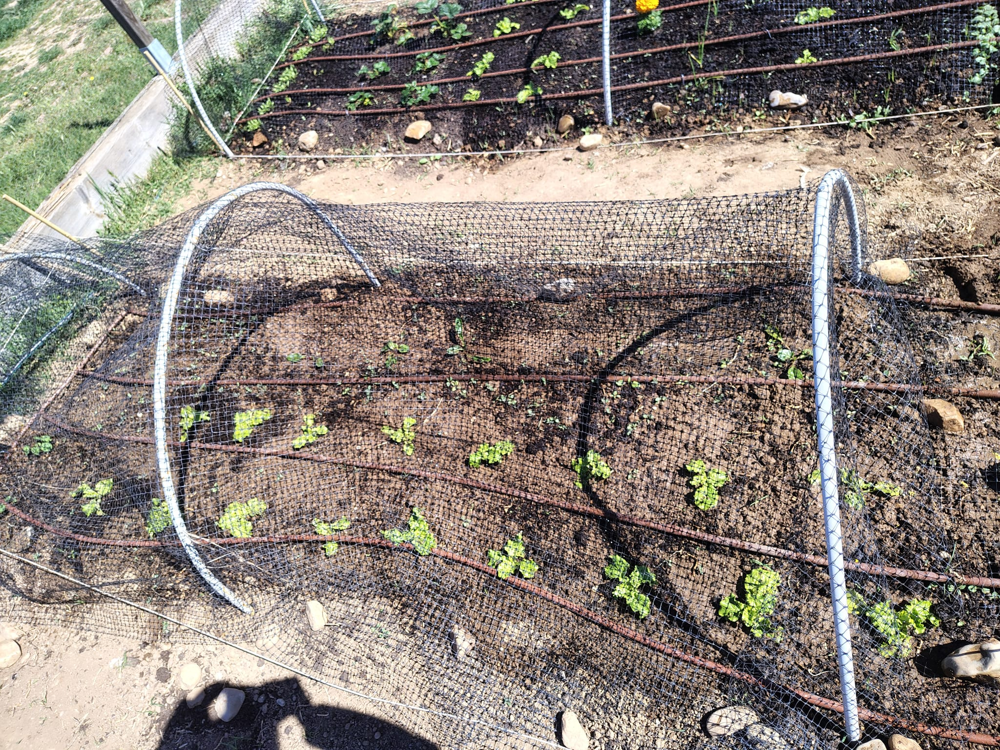
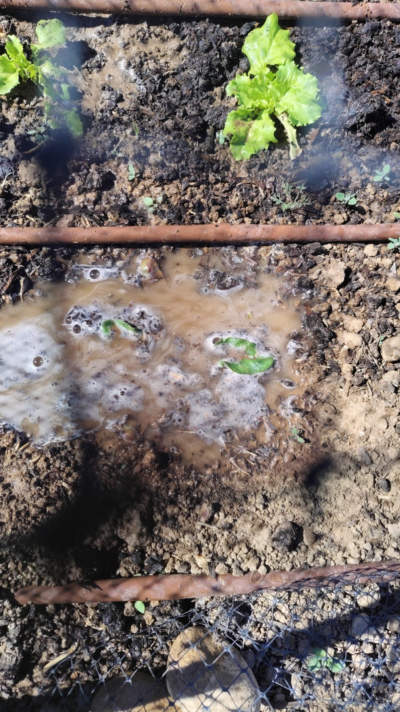
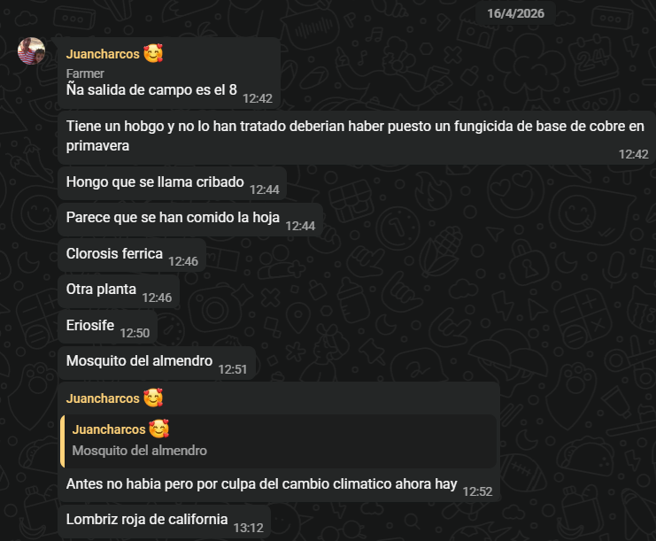
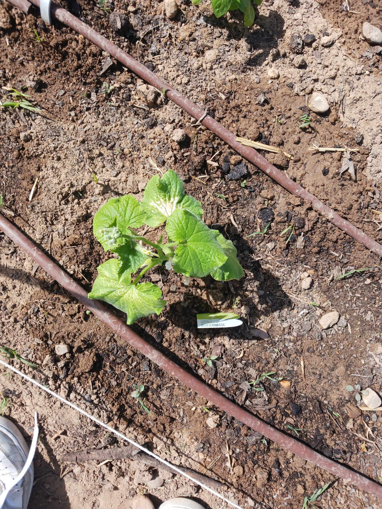
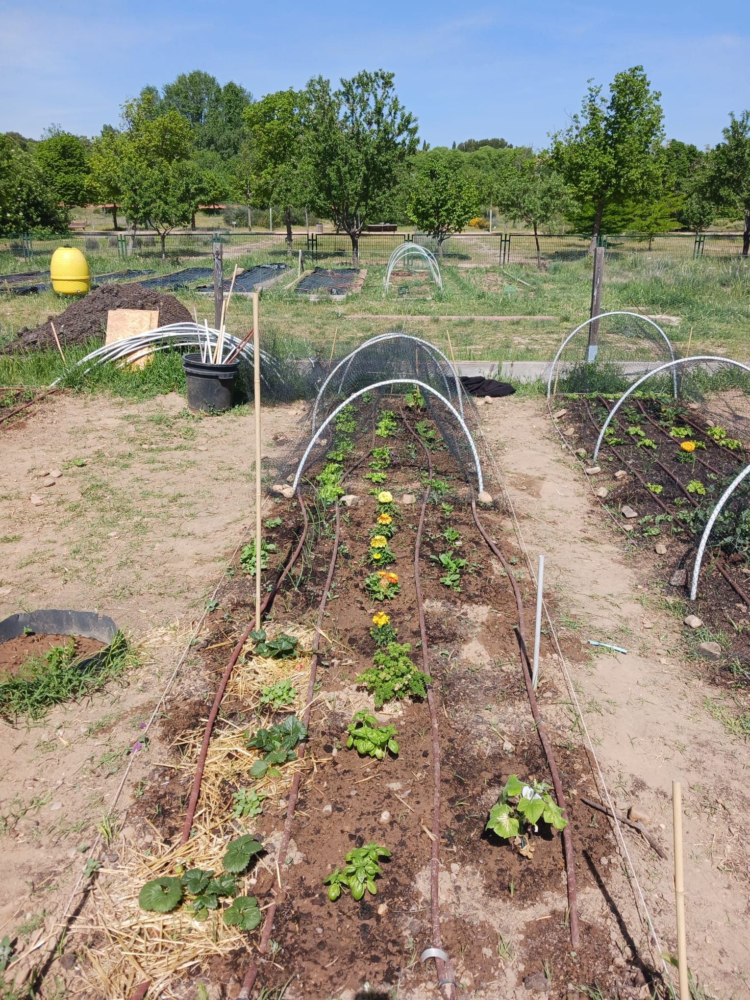
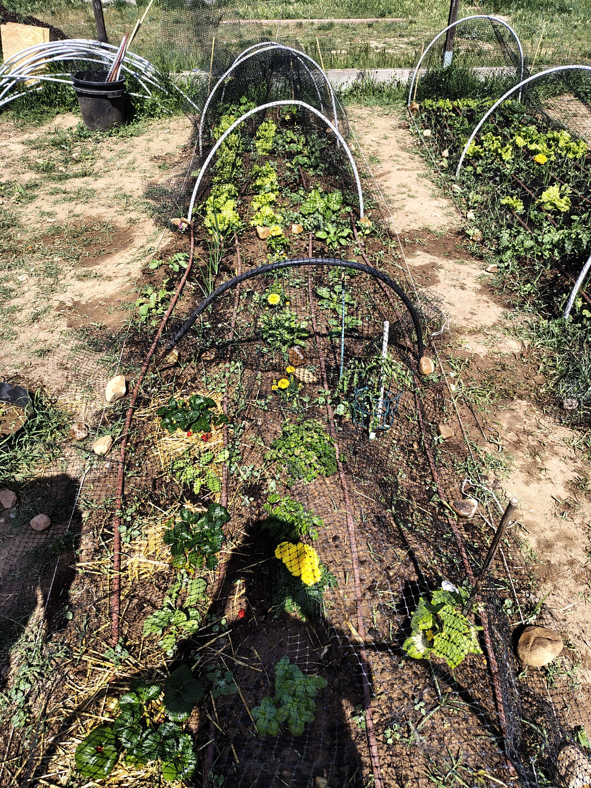

Nota: Esta entrada del diario ha sido redactada originalmente por mí (Noel).
No sé qué días son porque llevamos 3 semanas sin escribir el blog así que hemos perdido la cuenta. Voy a recapitular un poco sobre las últimas semanas y punto.
13 de abril creo
Ese día fuimos al huerto a regar brevemente porque creo recordar que volvíamos de clase, y nos encontramos con lo que parecía ser la escena de un crimen ya que todas las lechugas y acelgas que habíamos transplantado 1 día antes (creo) estaban cuajadas. Pero teníamos fe en que sobrevivirían al duro clima de Alcalá de Henares y volverían más fuertes y preciosas que nunca. También he de decir que mientras estábamos regando por algún motivo la tierra decidió no tragar nada de agua donde habíamos plantado una acelga, así que pensábamos que iba a morirse por exceso de agua pero resulta que esa es actualmente la acelga más grande que tenemos.

Imagen 1: nuestras acelgas y lechugas al siguiente día de haber sido transplantadas

Imagen 2: rip acelga
Cabe recalcar que como soy un maravilloso compañero de clase, siempre que voy al huerto echo un vistazo al bancal del grupo de Iván y Natalia, y si está seco les riego un par de veces, porque más vale que le crezcan sus lechugas a que nos roben las nuestras.
Día 16 de abril
Hubo un taller de agroecología sobre los tipos de plagas y eso, pero ni Alberto, Iván ni yo pudimos acudir porque teníamos prácticas de GCE, así que la próxima vez que Juan Carlos escriba un blog él se ocupará de hablar sobre ello. De todas forma se encargó de recoger "apuntes" para que quedase claro que acudió al taller. También nos dijo que aprovechó y plantó la albahaca.

Imagen 3: los "apuntes" en cuestión
Día 19 de abril
Pues diría que en este día fuimos a plantar las 2 plantas de pepino que Alberto y Juan Carlos tenían en sus casas, pero como no hicimos foto no puedo adjuntar ninguna evidencia, pero vamos que las plantamos y ahí siguen.
Día 20 de abril
Juan Carlos fue él solito al huerto y nos mandó una foto donde se ve que el pepino, o quizás deberíamos llamarle "pepinillo", de Alberto se había quemado por el sol.

Imagen 4: el pepinillo de Alberto con una hoja quemada
Juan Carlos también aprovechó y le hizo una foto completa a todo nuestro bancal. Ya podemos ver que las acelgas y lechugas consiguieron sobrevivir, que los rabanitos estaban creciendo de buena manera, que las fresas aguantaban, etc. (Me da pereza describirlo todo)

Imagen 5: nuestro bancal al completo
Día 24 de abril
Iván y yo fuimos al vivero de Vicálvaro a comprar una planta de tomates, porque querían tomates los niños, lo que pasa es que la noche de antes hubo una mega tormenta y entonces todas las plantas estaban medio reventadas del viento y la lluvia y mil cosas más supongo. También aprovechamos y compramos una preciosa planta de Tagetes nueva porque las del huerto estaban reventadas, gracias a que Juan Carlos y Alberto (probablemente más Juan Carlos que Alberto) decidieron plantarlas antes de tiempo a pesar de que Adolfo les dijo que no lo hiciesen porque aún podría haber heladas. Ese día Alberto y Juan Carlos, antes de que Iván y yo llegásemos, quitaron unos cuantos rabanitos prematuros para dejar que creciesen bien los demás y no hubiese tanta competencia entre sí, y como los que quitaron eran pequeñitos y tenían buena pinta, lavamos uno y le di un bocado, y no podía estar más malo, en cuanto tocó mis papilas gustativas salió justo por donde había entrado.
Día 27 de abril
Este día nos pasamos simplemente a regar y no hicimos nada más.

Imagen 7: se va viendo bien bonito y colorido nuestro bancal
Día 28 de abril
Este día estuvo cargado de angustia, dolor y sufrimiento. Llovió, tronó, granizó e hizo muuuucho viento. Teníamos miedo de que todo nuestro esfuerzo se fuese al garete, pero afortunadamente, no sucedió eso. Al parecer nuestras pequeñas plantas ya no eran tan pequeñas, y fueron capaces de soportar todo ese vendaval y sobrevivir al duro día.
Reflexiones:
- Las plantas han dado un buen estirón y todo va a buen ritmo
- El tomate es puerta grande o enfermería, ya que cuando lo transplantamos estaba cuajadísimo, y la última vez que lo vimos no es que hubiese mejorado mucho
- Nos hemos dado cuenta de que el bancal de un tal Lucian Alexandru Tintea no se esfuerza nada de nada y compra todas sus plantas ya con los frutos a punto de ponerse maduritos (como a él le gustan)
- Somos el único bancal al que no le ha crecido una patata de años anteriores de manera aleatoria, y eso nos pone tristes
- Deberíamos hacer el blog semanalmente en lugar de tirarnos 3 semanas sin hacerlo